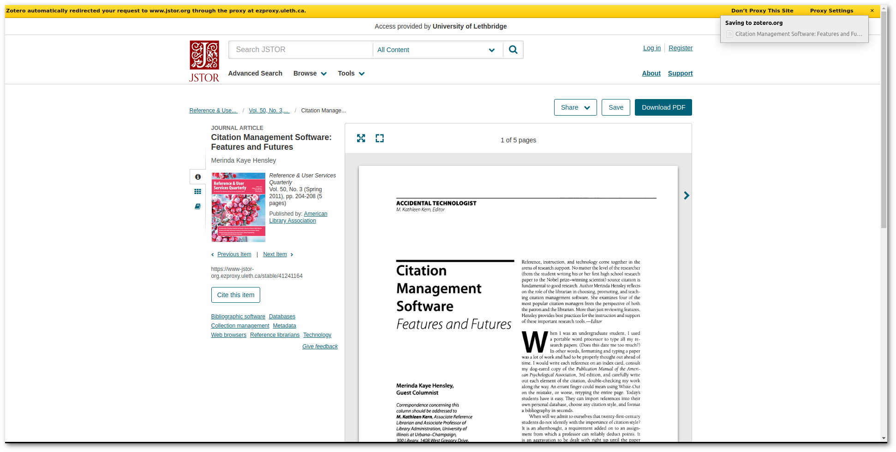
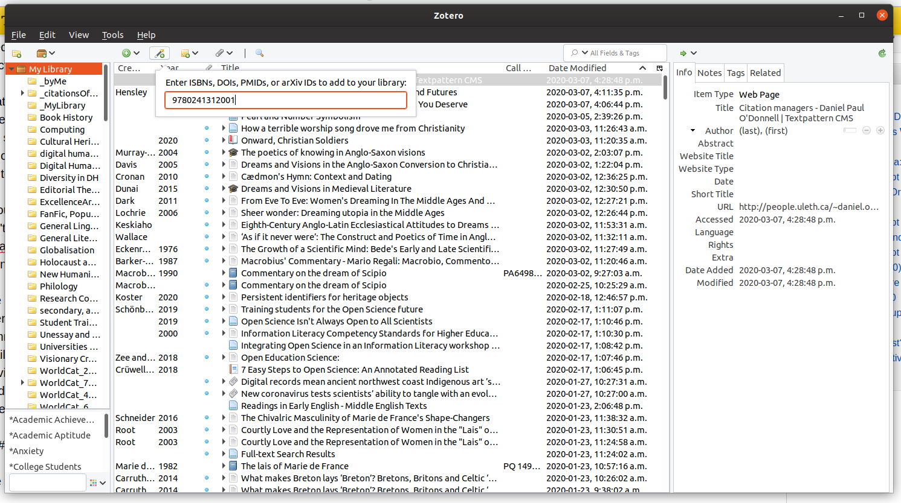
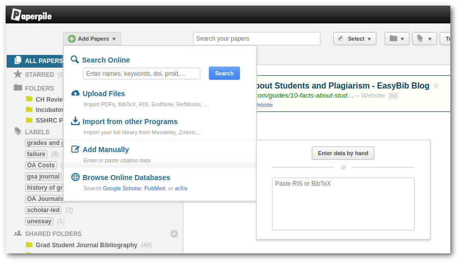
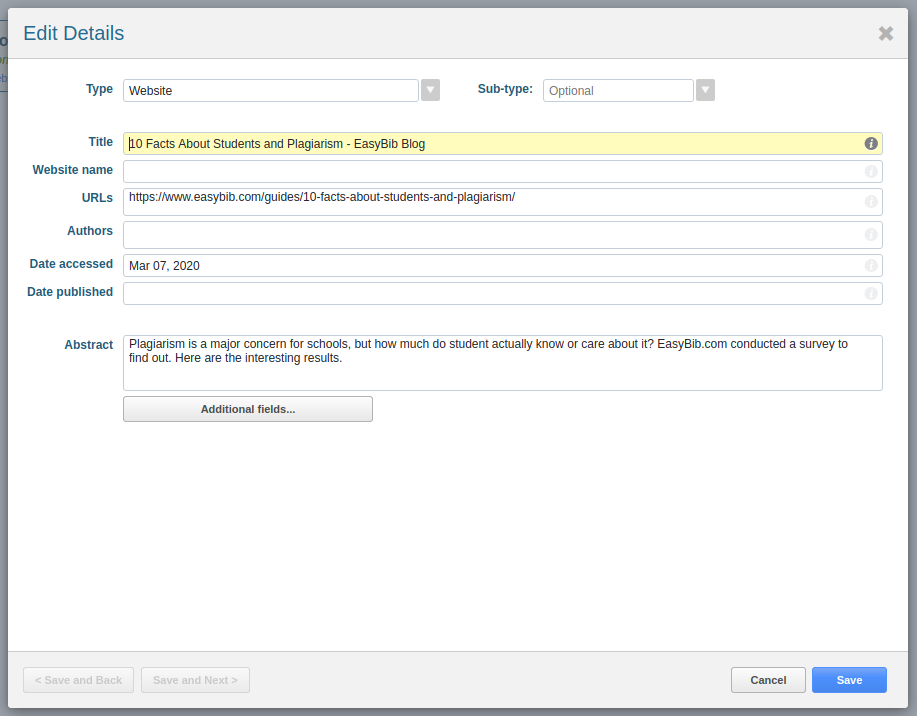
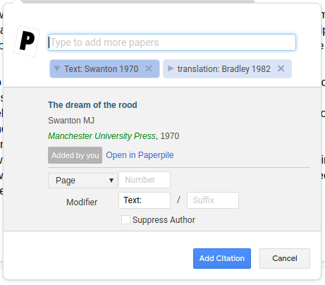
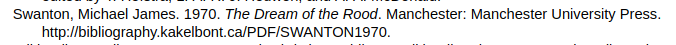
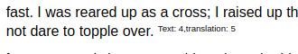

Citation managers
Posted: Nov 30, 2014 17:11;
Last Modified: Nov 09, 2020 12:11
Keywords:
One of the most surprising things I find as a university teacher is the fact that my students seem to be almost completely unfamiliar with citation managers.
This is madness.
Citing sources is the one thing students do in every single class they take at a university: it doesn’t matter if you are writing a lab report, an essay, a presentation, or making a poster — you are going to have to cite a source. You don’t have to cite sources when you perform a dance or paint a painting in art class, I suppose. But if you write about that dance or painting in any way, it is almost certain that you are going to need to cite a source as part of that writing.
But not only do students have to cite sources all the time, they worry about it as well. As an instructor, I am constantly asked about citation and sources: what students need to cite, how they can tell whether they need to cite something, how many things they should cite, and so on. According to a survey conducted by EasyBib, 66% of students worry about citing sources correctly and 42% have been penalised for making a citation error. Of course, since EasyBib sells a citation-checking service, you’d expect them to discover that students are worried about citations and perhaps even assume that their clients are particularly likely to have been burned in the past. But if anything, I suspect those numbers are pretty low: I regularly get asked for advice by students who are worried about incorrect citation practices; and every professor I’ve ever heard of seems to reserve the possibility of assigning a penalty for poorly formatted citations.
Contents
What Citation Managers do
The point of a citation manager is make citation easier and more accurate. They provide tools for collecting, storing, extracting bibliographic information from publications and then correctly formatting citations in your reports and essays. The best ones integrate with web browser and word processors, contain hundreds of standard referencing styles, and recognise and interpret common Persistent Identifier (PID) formats like DOIs (Digital Object Identifiers, often used with journal articles), ISBNs (International Standard Book Numbers, usually found on books), PubMed IDs, and so on.
How you use them
You use them throughout the research cycle:
- during your research phase, you use the browser plug-ins to collect references that you might later want to cite in your essay or report;
- during the writing phase, you use them to insert references into your document; and
- when it comes to final editing and proofing, you use them to format your citations according to the style you professor (or journal or publisher) want you to use.
How you did this BCM (Before Citation Managers)
Before citation managers existed, each of these steps was relatively time-consuming and open to error. You had to discover and copy down relevant bibliographic information (author name(s), analytic and monographic titles, date, place of publication, and so on), and then when you were getting your paper ready for submission, you had to format and alphabetise the references and internal citations using whatever style your professor (or the journal you were submitting to) wanted. Most departments (and journals and publishers) in those days had in-house style guides that showed you how to format different kinds of standard sources. But it still required a fair bit of work at each stage. If you didn’t realise a piece of information was important during the research phase (perhaps you forgot the series title, or the place of publication), you’d have to go back and find it; and if a source was in any way complex (such as a translation of a chapter from a book of essays by different authors, or a legal case), you might find that your department’s guide didn’t provide a suitable example or something from which you could extrapolate.
How Citation Managers make this easier
Good citation managers make all of this easier. During the collection phase, they extract the bibliographic information you need for proper citation from most formal research genres (i.e. books, journal articles, and so on), and some of them do a pretty good job of many non-standard or informal formats as well (e.g. web pages, tweets, data sets, and so on). Even when they don’t get the bibliographic information exactly right (many have trouble with web pages, in part because so many web pages have bad bibliographic metadata), they almost invariably keep a copy of the URL and even the content of the page itself, meaning that you can always go back and correct by hand any references that aren’t quite right.
But above all, they format your citations!
The place where they really pay off for the student, however, is in citation formatting. In fact, they are more important perhaps for students than they are for professors.
This is because, for historical reasons, most disciplines have their own citation formats, which students are expected to learn and use in their written work: MLA in the English department; Turabian or Chicago in History; APA in Anthropology and Sociology; AIP in Physics; ACS in Chemistry; and so on. This means that while the professors in those departments often only need to know the one or two citation styles (the ones used by the top journals in their field), students are expected to know a much wider range of formats and practices — from the citation of specific pages in the Humanities to the citation of entire articles in a lab science.
With a citation manager, you don’t have to know any of this, except the name of the citation style you are supposed to use. Citation managers usually come with hundreds of citation styles built in (and since they generally all use the same language to encode these, there are thousands more available on the web). When you tell it to use a certain style, the citation manager then matched the bibliographic metdata it has for each item you are citing with the formatting required for a given style. Author initials for APA, complete names for MLA. Date after the Author for Chicago Author-Date, at the end of the entry for MLA.
If you use a citation manager, you really do not need to devote much time (or worry) to learning the more esoteric details of each citation format. The Garbage-In, Garbage-Out rule still applies: your citation manager can’t format a reference correctly if it doesn’t have the correct metadata; but if the metadata is correct, your citation manager should format everything correctly no matter what style you are supposed to use. So of you are submitting a paper to the English department, you select the “MLA” style and the citation manager formats your citations and references in the way your professor is expecting; submit to History or Anthropology, and you switch the style selector to use Chicago, say, or APA — whatever the professor wants to see. In fact, if you use a citation manager, your papers will often be better formatted than your professor is expecting: few professors stay entirely up-to-date with minor changes in their preferred style; the templates used by your citation manager, on the other hand, are almost always corrected to the latest version.
Some examples using Zotero and Paperpile.
The rest of this document shows you how reference managers work, using screenshots from two I use all the time: Zotero (a free, Open Source, reference manager that is very commonly used in the Humanities) and Paperpile (a subscription service that works very well with Google Docs). Other common and popular citation managers include Mendeley (common in the sciences, and free-to-the-user), and EndNote (paid software often used available with a site licence at universities). As I say below, I see no reason why you shouldn’t use a free service like Zotero or Mendeley over a paid service like EndNote or Refworks, even if your university subscribes to EndNote or Refworks: the free ones are at least as good as the paid ones (and to my mind actually better in many respects) and you will never have to worry what happens to all your references after you graduate.
How they collect references
The first question is how citation managers collect references. The best ones usually have several methods:
- They have a browser plugin that automatically recognises and extracts bibliographic information from common research resources (e.g. JStor, PubMed, Google Scholar). In these cases, you normally add the reference (and a copy of the article if it is available to you) by simply clicking on the “add reference” button in your browser tool bar.
 - They have a system that allows you to add a reference using a PID (Persistent Identifier) such as a DOI or ISBN. If the manager has an associated app, you may be able to scan book references in by pointing your mobile phone camera at an ISBN bar code.
 - They allow you to paste bibliographic information into the manager in standard formats such as RIS or BibTeX. Search services like Google Scholar and library catalogues often allow you to download bibliographic references in these formats, making it easy to transfer them to your manager.
 - They allow you to add or edit bibliographic information, and upload files entirely by hand.

In my experience, you end up using the first three methods much more than the last one. In the sciences, where the range of sources you are likely to use is limited generically primarily to journal articles and the bibliographic infrastructure (such as DOIs and ORCIDs) is very strong, you may find that you rarely if ever have to do anything by hand: most citation managers will easily handle most of your sources. In the Humanities and Social Sciences, where you are likely to use a wider range of sources and the infrastructure is less consistent, you may find that you have to do more hand-editing, particularly of web-resources and for older print sources.
But even in the case of sources you have to enter by hand, using a citation manager usually makes more sense that formatting your bibliography by hand, because you are building a database of resources for future projects. After you’ve entered the information once, you can use the same references over and over again. Most citation managers also link the bibliographic information to a stored copy of the reference as well (i.e. a PDF or web page, if available) — which means that your citation manager can also become a personal reference library, a central location where you can find things you used in previous papers. In fact, you might find it useful to start using the citation manager instead of the book mark manager in your web-browser: everything you book mark is then available for use in your essays!
How they put references in your papers
The next thing citation managers do is put references in your papers. The best ones all have plugins that work with the major word processors, allowing you to cite things as you write your papers.
The normal method for adding a citation is
- Put the cursor where you want the citation to appear;
- Click on an icon for the citation manager in the word processor menu/ribbon;
- In the dialogue, type something that will help you find the reference you are looking for: title, author, year, keywords, etc. With most citation managers, the reference already has to be in your collection in order to be cited; an exception is PaperPile, which will also search the web for you from the dialogue;
- When you find the reference you want, choose it and then add any details and special handling (i.e. page or section numbers, preceding or following text, suppressing the author, or so on).
 - When you close the reference, the citation is added to the text at the point where you cursor is and a bibliographic entry is placed at the end of the file in a “works cited” section.

Changing and correcting references
If you change the citation style, then all the references in the document will up-date and be reformatted to the new style (in the following examples, I’ve changes from Chicago to Nature).

If you modify one of the references used in your document within the citation manager, the changes will also appear in your document. Note: for this reason, you should always correct references in the citation manager, not your word-processor file; citation managers tend to overwrite references every time you reformat the document, meaning that your changes will be lost if they are not made in the citation manager.
What if I need a reference style that is not already in my citation manager?
The most common citation managers come with all the citation styles you are likely to need as a student: MLA, APA, AIP, and so on. In fact, they usually have different versions of the most common ones — meaning you can use MLA 8 (the most recent version) for the new hire in the English department, and Chicago 16 (an older but still widely used format) for the professor who is just about to retire in History.
Things might be a little different when you start trying to publish things. Many journals use house-styles that are based on but not exactly the same as the major styles. In many cases, templates for these will exist as well. Most citation managers store citations in a format known as Citation Styles Language (CSL), and, as you might expert, there is a central repository of such styles: citationstyles.org. You look for the style for your particular journal and, if you find it, load it into you citation manager (how this is done varies from manager to manager).
If you can’t find the exact style you need, most citation managers also have style editors that allow you to create a new style. In this case it is usually best to start with a style that is close to what you need and modify that.

Comment [1]
Johann Gross (Tue Nov 9, 2021 (07:43:57)) [PermLink]: Have you tried https://citationsy.com/ before? Would be curious to hear your thoughts :)